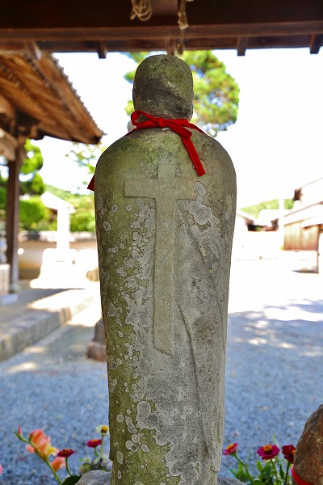

兵庫県加西市。
加西と言えば石仏に詳しい人々の間ではチョットは知られた場所である。
その代表格が北条の五百羅漢像。
当サイトでも
以前お伝えしたことがあったが、調べてみると他にも不思議な石仏が沢山ある模様。
なので改めて加西の石仏を諸々廻る加西市縦断ツアーを敢行したのでその様子をご報告させていただきたき候。
というわけで訪問したのは以前お邪魔したことのある
北条の五百羅漢。
実に23年ぶりの再訪である。
もう当時の記憶すらあやふやだが、もっと田舎っぽい感じだったように記憶している。
今や周辺は住宅地として開けており、入口にはこんな素敵なトイレまで出来ていた。
ここの五百羅漢が
観光資源としてグレードアップしたのだろう。よござんす、よござんす。
入口では石の仁王像が出迎えてくれる
境内には木が多く、予想通り蚊がぶんぶん。
虫よけスプレーが置いてあったのでたっぷり使わせていただきましたよ。

で、久々に五百羅漢さんとご対面。
御覧のように
マッチ棒のようなプリミティブな造形だ。
石像群は全部459体。じっとこちらを見ている。
以前はいつどこで造られたかも一切謎の石仏とされていたが、その後の調査で
江戸時代初期のものだという事が判明したそうな。
地元で採れる高室石の角柱が使われている。
その造形からしてもっと古いモノかと想像していたら案外新しいんですね…。
四角い角柱に丸いアタマ。
顔の造作も御覧の通りプリミティブだ。
羅漢像以外の神仏も。
大きさもやや大きいが、基本的にはシンプルな造形だ。
胴体の部分は正面だけを線刻していく。
これまたシンプルそのもの。
恐らく石工などではなく、素人の手によるものなのだろう。
かといって一人がこれだけの数を彫れるはずもなく、素人の集団が何らかの理由で彫ったのだろう。
お寺の説明によると隣接する酒見寺の再興に合わせて供養のために造られたという。
この中央の像の手の表現とか凄くないすか？
下手とか素朴とかいうのではなく、ある意味モダンアートに近い意図が感じられる。
昭和のアウトサイダー石仏を代表する
高鍋大師の群像を思い起こさせてくれる。
境内の奥は一段高くなっていて、如来像が並んでいる。
さらに二十五菩薩が並んでおり、
その奥には阿弥陀如来像があった。
なぜこのような異形の石仏が産まれたのかというと、諸説ある中で
キリスト教影響説が有力なようだ。
加西にはかくれキリシタン（今は潜伏キリシタンって言うんでしたっけ？）の遺構とされる十字架が彫られた地蔵が100体以上もあるという。
そのようなキリスト教徒が潜伏していった時期とここの五百羅漢が作られた時期が重複することからそのように考えられているのだろうか。
とりあえずかくれキリシタンの遺構がどんなものか見に行ってみよう。
…というわけで、次はその十字架地蔵を見に行くことにした。
やってきたのは北条の五百羅漢から6キロほど東にある
大日寺。
本堂の前に6体の石仏が並んでいる。
正面から見るとごく普通の石仏っぽい。

その中央のお地蔵さんの背中にがっちり十字架が陽刻されている。
背面十字架地蔵と呼ばれている。
恐らく かくれキリシタンがお上の眼を逃れ信仰していたとされるものだ。
享保10年ごろ、というから北条の五百羅漢よりはかなり後に造られたものだ。
このように十字架をひっそりと有した石像や灯籠が加西市内には非常に多いという。
左端にある半身彫りの石仏は阿弥陀如来だという。
これは鎌倉〜南北朝時代のもので、ここにある6体の中では一番古い。
石棺仏と呼ばれ、裏側に回ってみると判るが棺の蓋のような形状をしているのだ。
この石仏もチョット憶えておいて欲しい。
さらに不思議な石像のルーツを求めて移動する。
次に向かったのは北条の五百羅漢の南西、坂元という在にある墓地（※）。
ここの六地蔵がすこぶる変わっているのだ。
どうですかこの
ジャミラ感。
北条の五百羅漢も凄い造形だけど、ここの六地蔵のほうが遥かにぶっ飛んでいる。
これは宇宙人？…やっぱジャミラ？
ところがここの地蔵のフォルムには深い理由があるようだ。
この両手から上部のアーチ部分に
Ω（オメガ）の文字が隠されているのだ。
ね。
そういわれてみると、不自然な造形も何となく納得がいく。
さらに墓地の中にはＡ型の地蔵も。
AΩという文字にはキリスト教では深い意味がある。
ラテン語のアルファベットはAから始まりΩで終わる。
例えば新約聖書のヨハネの黙示録の中にこんな記述がある
「私（神）はAでありΩである」
そこには神の全知全能や全てを創造した、という意味合いが込められているのだ。
…つまりこの地蔵も重要なメッセージが込められた潜伏キリシタンの遺構なのだろう。
話を北条の五百羅漢に戻す。
北条の五百羅漢の特異な造形はその中に何らかのキリスト教に由来するメッセージや図像が盛り込まれているのではないだろうか。
そう考えると↑この辺の石仏とか、いかにも何かの文字を隠しているように見えてきませんか？気のせいですかねえ。
それをカムフラージュするためにあえて稚拙っぽい、そして独特な造形の石仏を彫ったのではなかろうか。
それが加西の石仏の不思議な造形の正体と考えていいと思う。
ところでこの坂本の墓地で気になることがあった。
宝篋印塔が家形の石祠の中に納まっているのだ。
それも一基二基だけでなくほぼ全て。
勿論古くからあるモノだが、これだけ崩れずに並んでいるということは比較的最近まで行われていた習俗なのだろう。
これは加西市内の他の墓地で見かけたものだが、このように新しく墓地を作ってもやはり石祠は欠かせないようだ。
それだけこの地域の人々にとっては大事なパーツなのだろう。
次に向かったのは山伏峠というところ。
人気のないひっそりとした山道の傍に大きな四角い石塊が建っている。
高さは2ｍ以上、幅は1m以上。
内側に彫り込められた部分には仏が彫られている。説明板によると南北朝時代以前のもので阿弥陀如来が彫られている。
この巨大な石は
家型石棺の蓋だという。
つまりΩ地蔵のあった坂元の墓地でみた石室の屋根の部分を再利用したものなのだ。
そういえば大日寺の背面十字架地蔵の隣の隣にあった石棺仏も同じような形状をしていた。
加西には昔から宝篋印塔を収める家型の石棺が多く、その際に用いられる屋根の部分を再利用して石仏が彫られたのだろう。

奥には三体の仏が彫られている。
特徴的なのは石の両サイドに耳のような突起が付いていることだ。
これは形状からして家形の屋根ではないだろう。
遺体を収めてあった石棺の蓋なのかもしれない。
それにしてもこんな峠道にどうやってこんな大きな石を運んできたのだろう？
加西市内の石仏が特徴的なのは先にも示したが、いわゆる何の特別性もない路傍の石仏ですら変わっている。
偶々通りかかった墓地の入り口にあった六地蔵。
こうしてみている分にはどこにでもある六地蔵なのだが…
やはり胴体の彫りかたは平面的で特徴的だ。
そんな加西の石仏の現代版が集合した公園がある。
古法華寺だ。
寺の周囲は自然公園となっており、近年彫られた石仏が点在している。
こちらは摩崖仏。薬師三尊像。
なぜか小便小僧。
古法華寺までの道にはアマチュアの方々が手掛けた石仏が並んでいる。
お寺自体は無住で、小さな本堂と収蔵庫があるだけ。
しかし収蔵庫には
日本最古の石仏といわれる古法華石仏が収められている（見れなかったけど）。
お寺の裏には岩盤がむき出しの道があった。
登ってみると思いのほか眺めの良い場所だった。
お寺からやや下った辺りは石仏の森といい、たくさんの石仏が並んでいた。
北条の五百羅漢インスパイア系のヘタウマ石仏。
石彫アトリエ館という施設があり、誰でも気軽に石彫が楽しめるそうな(有料）。
これにて加西市石仏ツアーは終了。
不思議な造形の石仏を見に加西に来たわけだが鎌倉、南北朝から江戸、さらには現代まで様々なバリエーションの石仏を堪能することができた。
特に江戸期のキリスト教に影響を受けたとされる奇妙な造形の石仏群が印象的だった。
元々石の産地なので、石彫が盛んな地域だったことを踏まえても加西の石仏は特異な進化を遂げてきた。
今後、この石仏文化がどう展開していくのか、ひそかに期待しておこう。
いるかなと思ってたらやっぱいたわ、銅鑼衛門地蔵尊。
※参考文献；日本の石仏 2015年春号